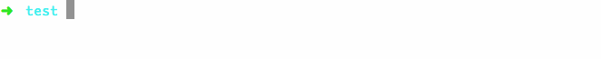
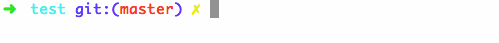
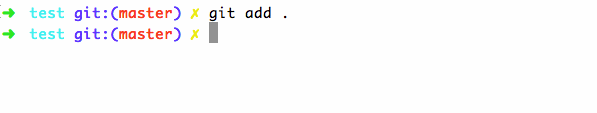
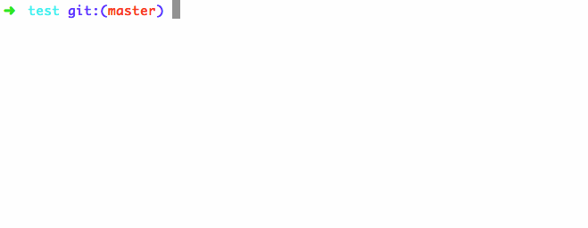
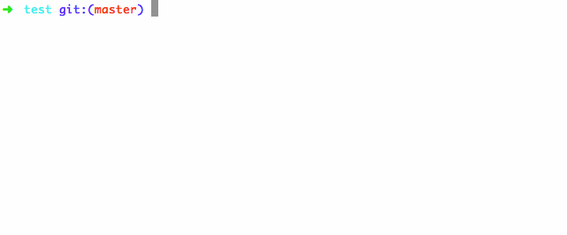
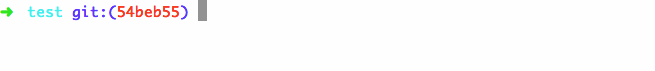

Version control is the idea of taking snapshots of files at different points in time so you can look back at a snapshot when needed. In this tutorial, we'll walk through how to
access a folder via Terminal
set up the git repository
commit snapshots of files
check out snapshots
This tutorial assumes you have a mac and have followed this
guide on installing git.
access a folder via Terminal
Make a new folder on your Desktop named test with two empty text files.
Open a new Terminal window and drag the folder to the Terminal window. Press enter.
set up the git repository
Make a git repository with
git init.

Staging is the area where files gather for a snapshot, or a commit. Type
git status to see information about files in staging.
git tells you that the files are untracked. This means you haven't added them to staging to prepare them for a commit. Let's add both files to staging.

If we run
git status, we see that the files are now in staging.
take snapshots of files
Now we are ready to commit a snapshot of the files in staging. Each commit has a message describing the status of the snapshot. Since we only added the two files, let's call this commit "add one.txt and two.txt".
Congratulations! You just took a snapshot of your files. Now let's make some changes. I'm going to open up one.txt and save "hi" to it.
If we run
git status again, we see that we modified one.txt. This change isn't in staging. If we try to commit a snapshot now, git won't let us because we haven't staged any changes. So let's add the change to one.txt to staging with
git add . and commit the change.

check out snapshots
git log shows our commit history.
Press q to exit the history view and go back to command line;

We look around a past snapshot using
git checkout (snapshot hash), where the snapshot hash is the first 4 digits of the commit hash. We saw with
git log that the hash of our first commit is 54beb5, so let's checkout that commit and look around.

Notice that now one.txt is empty, as it was originally when we made this commit!
Now lets go back to our latest version with
git checkout master.

Congratulations! You now know how to access a folder via Terminal and commit snapshots of your project with git. Visit the
documentation to learn more about advanced git commands and read this
guide to learn about how git works under the hood.